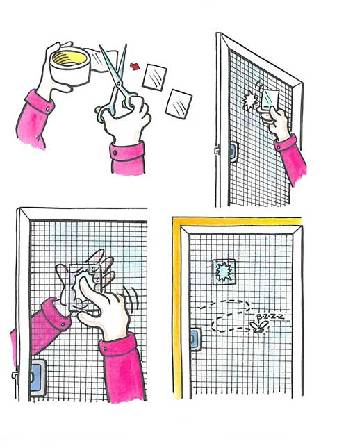
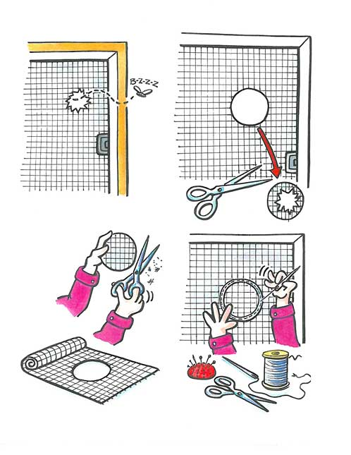
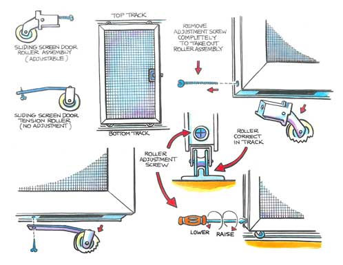
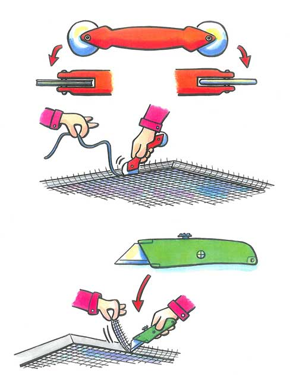

A well-mounted screen door pleasantly ventilates your living space and keeps out the bugs. It closes smoothly without catching anywhere on the jamb (the frame around the door), into which it fits perfectly with no bug-sized gaps. The screening should be tight as a drumhead, but that’s where problems usually start, because screen material is fragile.
Eventually a rip will appear, or even a large hole. Whether the damage was caused by children at play, enthusiastic dogs, cats playing Spider-Man or an adult accidentally poking a hole with a tool handle, it must be fixed, and soon. Flies and other insects know exactly how to find a hole in a screen, and they tell all their friends. Furthermore, any break in a screen invites curious fingers to probe it, so the rip or hole will quickly grow in size.
If you can’t tackle the job right away, put a wide piece of clear tape over both sides of the hole. (The Image Gallery includes several illustrations to further explain concepts presented in this article.) It can be done without dismounting the door and takes less than a minute. This only postpones the job, but it will buy you some time.
There are two basic types of types of screen doors - sliding and hinged. But there are variations: wood, aluminum and different sizes. Make a note of what type of door you have, and take measurements before you leave for the hardware store.
Next, get ready for the repair. There are two ways to approach this task:
Choose No. 1. Set aside a large block of uninterrupted time and make a preliminary list of tools and materials: scissors, utility knife, thread, replacement screen and a screen-door tool called a “roller.” (See Image Gallery.) Keep the list handy, because you may be adding to it. For instance, you won’t know if the spline (the rubber gasket that secures the screen to the frame) needs replacing until you remove it. And you may need some replacement screws if any of the old ones are discombobulated or missing.
When you’re ready for a more permanent repair, it’s always best and easiest to take the door off. It’s much safer than working in a narrow, awkward space between two freely swinging doors where it’s surprisingly easy to pinch fingers. Slowly and carefully, place the door flat on two sawhorses. Make sure your work area has enough room to walk completely around the door. A large covered porch is ideal, offering shade on a hot day and protection in all weather.
Unscrew the hinges from the jamb, leaving the hinges on the screen door. Fold them flat so they’re out of the way. The spring or automatic closer should be removed from the door and left attached at the jamb. Keep screw-pulous track of all screws, or you’ll regret it later.
Examine the damaged area of the screen. A small rip can be sewn shut with a needle and thread. To fix a gaping hole, cut a circle around the damage and remove that portion of the screen. Then, with a needle and thread, sew in a round patch of screen about 2 inches larger than the hole. Put it on the side that faces outside. (See Image Gallery.)
If the entire screen must be replaced, carefully remove the old rubber or vinyl spline from the groove, starting at a corner. If the spline is crumbly or broken, you’ll need to replace it. Remove the damaged screen and measure it, as well as the spline if you intend to replace it.
To do a taut, wrinkle-free and professional installation, try a pro’s trick: Bend the door slightly at the center before you install the replacement screen. An easy way is to attach clamps to both long sides of the frame and suspend weights from them, enough to bend the door downward about a half inch in the middle. This will bring the edges of the door closer together. When you release the weights after installing the screen, the edges will move to their original shape, making the screen tighter.
Lay the replacement screen over the entire door, with at least 2 inches of overlap along the entire perimeter of the spline groove. Starting at a corner, use the convex wheel of the roller to push the new screen into the groove, working out the wrinkles as you go. (If you use the concave wheel, you could rip the screen.) Push the spline down into the groove with the roller’s concave wheel until it’s flush with the frame.
Afterward, take off the weights and the screen will stretch perfectly taut. Slowly and carefully cut away the excess screen, and you’re done.
This design improvement is a delight to work with, but only if the frame is also made of wood. Most are aluminum and relatively flimsy. While you can still fix small breaks in the screen as described above, a full “screenectomy” is trickier than the same operation on a wood door. The flimsy frame is almost impossible to keep square, and it’s like wrestling an octopus.
Remove the screen door by sliding it all the way open and lifting it off the track. (See Image Gallery.) Place it on sawhorses and check the tiny roller wheels at the bottom corners, often made of plastic; if they are badly worn or damaged, replace them. If not, oil them, vacuum the track where they run, and give thanks. These are not stock items, and finding exact replacements is inevitably a challenge; knowing where the door was purchased helps, but not always. The adjusting screws that raise or lower the wheels are located on the bottom edge; unscrewing them all the way releases the wheel mechanism. Good luck finding one exactly like it, but odds are you’ll have to replace the entire screen door if you can’t find a match.
If you’d like to learn how to build your own wooden doors for barn or house, read The Handmade Door.
Do you have other tips for repairing screen doors? Share them in the comments section below.
|
ISTOCKPHOTO/KEVIN BROWN Screen doors improve natural ventilation, but also take a lot of abuse. |
 BOB RECH To prevent a ripped screen from further damage, cover the hole with clear tape on both side of the screen. |
 BOB RECH You can sew a patch onto a screen with a needle and thread. |
|
 BOB RECH Cleaning, oiling and adjusting rollers helps sliding screen doors function smoothly. |
 BOB RECH To replace an entire screen in a door, use a screen repair tool and a utility knife. |
|